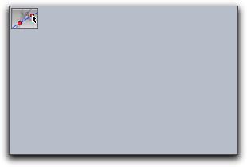
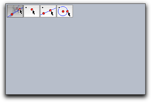
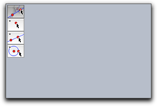
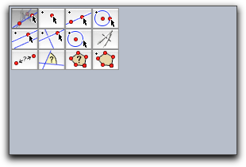
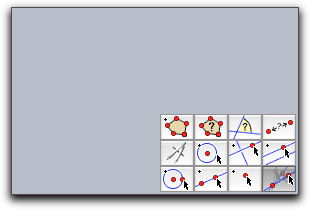

User Input
Sometimes it is necessary to handle user input by mouse or the keyboard explicitly. There are special evaluation times "Mouse Down," "Mouse Up," "Mouse Click," "Mouse Drag," and "Key Typed" for this (see
Entering Program Code). These evaluation times are captured exactly when the corresponding events occur. If one wants to react to the corresponding event data, there are several operators that read the input data.
Mouse and Key
Mouse position: mouse()
Description: Returns a vector that represents the current position of the mouse if the mouse is pressed. The vector is given in homogeneous coordinates (this allows also for access of infinite objects). If one needs the two-dimensional euclidean coordinates of the mouse position one can access them via mouse().xy.
Key input: key()
Description: Returns a string that contains the last typed character.
Is a certain key pressed: iskeydown(<int>)
Description: This operator returns a boolean value that is true if a certain key is pressed. The key in question is specified by the integer in the argument. This operator can be used to determine for instance the shift key is pressed. The codes for keys are usually 65, 66, 66, .... for 'A', 'B', 'C',... Codes for 'shift', 'crtl' and 'alt' are usually 16, 17, 18.
List of all pressed keys: keydownlist()
Description: This operator returns a list of the codes of all pressed keys. An interesting application of the keydown list id given in the chapter on MIDI functions, where you find an example
keyboard piano.
AMS Data on Gravity
On Apple hardware, CindyScript can access the gravity sensor of a laptop and determine its relative orientation in space. The gravity sensor returns a three dimensional vector.
Getting raw AMS data: amsdata()
Description: This operator returns the raw data of the AMS sensor.
Getting calibrated AMS data: calibratedamsdata()
Description: This operator returns a calibrated version of the AMS sensor data. The calibrated data is a vector of unit length that represents the orientation of the computer in space.
Creating Custom Toolbars in a View
Cinderella can be used to export interactive worksheets to an html page. Very often it is desirable not only to export an interactive construction but also a set of construction tools along with it (like buttons for constructing points, lines or circles). By using the following set of
CindyScript operations it is easily possible to create (and remove) custom toolbars that reside within an applet window.
Toolbars are in particular important for creating interactive student exercises. An example for this is given in
Interactive Exercises.
Creating a custom toolbar: createtool(<string>,<int>,<int>)
Creating a custom toolbar: createtool(<list>,<int>,<int>)
Description: Creates one or many toolbuttons in a Cinderella view. The first argument is either a string that describes a single construction tool or a list or matrix of strings that describe an entire toolbar. The other two arguments describe the position relative to a corner of the screen in pixel distances. Normally a createtool statement is located in the init slot of the script editor.
The following string identifiers that correspond to the construction tools are available:
- General:
"Move", "Delete"
- Points:
"Point", "Intersection", "Mid", "Center"
- Lines:
"Line", "Segment", "Line Through", "Parallel", "Orthogonal", "Angle Bisector"
- Circles:
"Circle", "Circle by Radius", "Compass", "Circle by 3", "Arc"
- Conics:
"Conic by 5", "Ellipse", "Hyperbola", "Parabola"
- Special:
"Polar Point", "Polar Line", "Polygon", "Reflection", "Locus"
- Measure:
"Distance", "Angle", "Area"
It is also possible to add construction tools from CindyLab:
- Local:
"Mass", "Velocity", "Rubberband", "Spring", "Coulomb"
- Environments:
"Gravity", "Sun", "Floor", "Bouncer", "Magnet"
The position of the tools is fixed relative to the construction view. By default the upper left corner is chosen. By using the modifyer
reference one can also choose the other corners. Allowed values for this modifier are
"UL", "UR", "LL", "LR". Here the first letter stands for
upper/lower and the second letter stands for
left/right.
Examples: The simplest usage is for instance given by the following piece of code. The tool created by

More complicated examples that create toolbars with several tools are given below
createtool(["Move","Point","Line","Circle"],2,2);
createtool(["Move","Point","Line","Circle"],2,2,flipped->true);
createtool(
[
["Move","Point","Line","Circle"],
["Parallel","Orthogonal","Circle by Radius","Compass"],
["Distance","Angle","Area","Polygon"],
]
,2,2,flipped->false);
createtool(
...same as example above...
,reference->"LR");




Modifiers: The createtool operator can handle the modifiers summarized in the following table:
| Modifier | Parameter | Effect
|
reference | <string> | reference position
|
flipped | <bool> | flipped->true exchanges rows and columns
|
space | <int> | spacing (in pixels) between tools
|
Removing a tool from a custom toolbar: removetool(<string>)
Description: Removes a tool from the custom toolbar.
Removing all custom toolbars: removetools()
Description: Removes all tools from the custom toolbar.